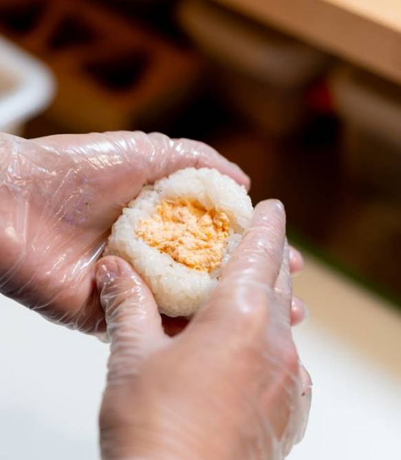
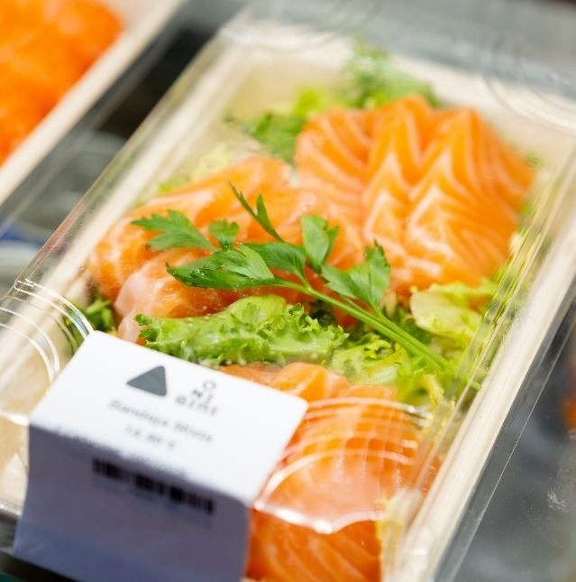
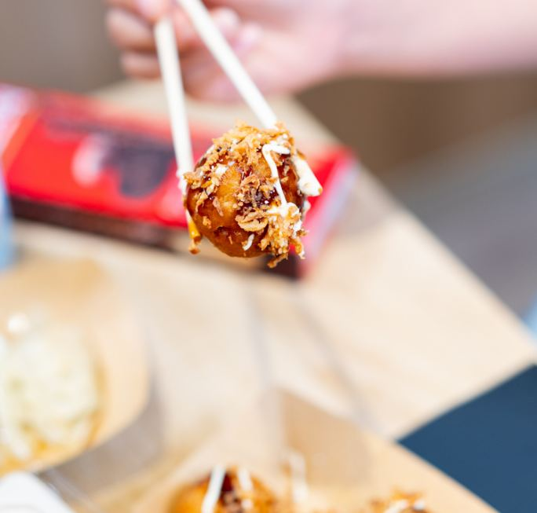
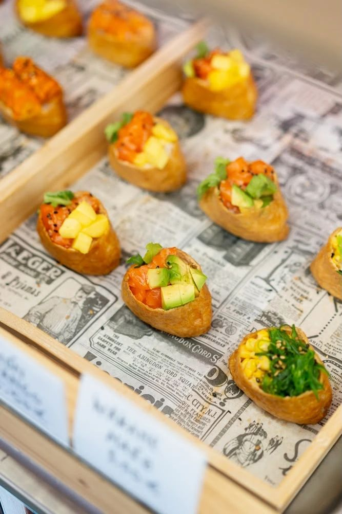
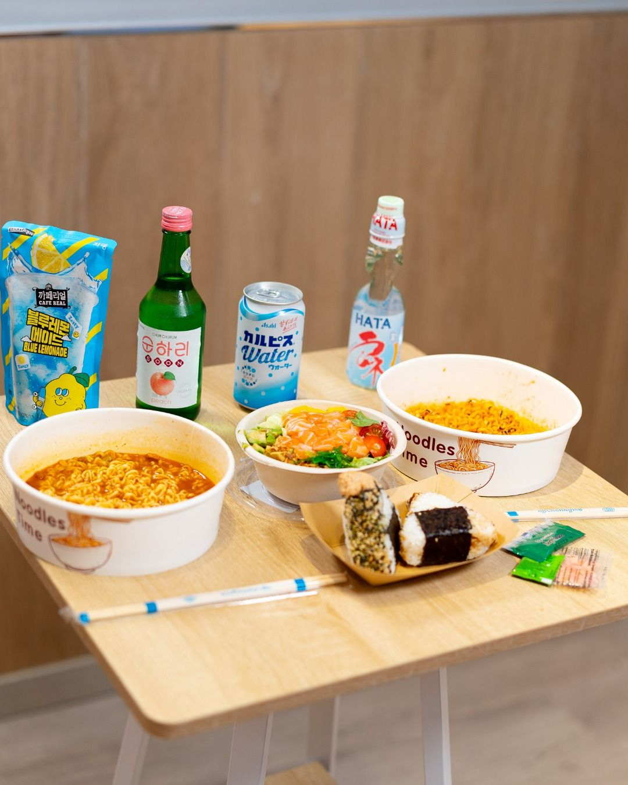
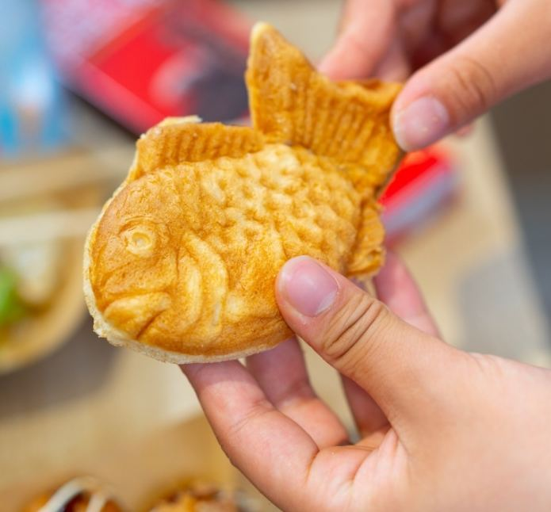
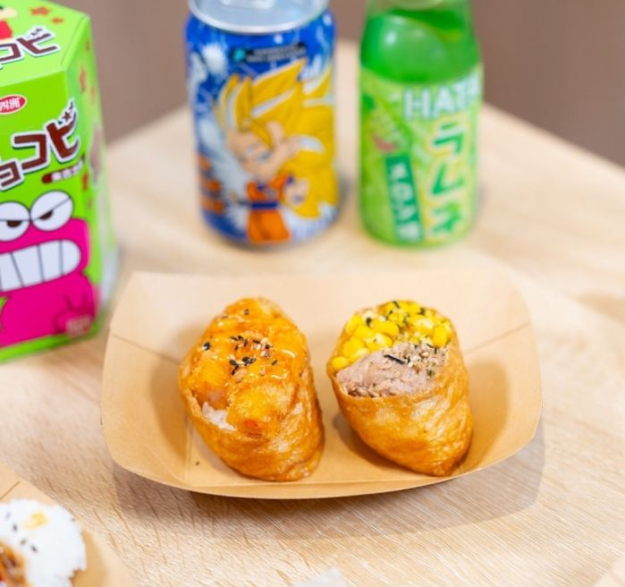

Reina Regente 4 · Donostia
Onigiri Edorin
Onigiris, sushi y ramen
Onigiris y sushi preparados cada día, y ramen coreano que te haces al momento. En el centro de Donostia, frente al Victoria Eugenia.
Comprobando horario…
- 4,5 en Google
- 11:00–22:00 todos los días
- Fresco hecho cada día
- Centro frente al Victoria Eugenia
Qué encontrarás
Eliges en la vitrina y te lo llevas
Onigiris y sushi recién hechos, ramen que preparas tú en nuestra máquina y bebidas para acompañar. Todo listo para llevar.
-

Onigiris
Hechos a mano cada día. También hay opciones veganas.
-
Sushi
Nigiris, makis y bandejas surtidas.
-

Sashimi
Bandejas de salmón listas para llevar.
-

Takoyaki
Bolitas de pulpo con salsa y bonito seco.
-

Inari
Saquitos de tofu dulce rellenos de arroz, con toppings variados.
-

Hazlo tú
Ramen coreano
Elige tu ramen y prepáralo al momento en nuestra máquina.
-

Dulces japoneses
Taiyaki y dorayaki para el antojo dulce.
-

Bebidas y snacks
Refrescos y snacks asiáticos para acompañar.
¿Alergias o intolerancias? Pregunta en la tienda antes de comprar.
Cada noche
Caja sorpresa desde 5,99 €
A partir de las 21:30 y hasta agotar unidades. Las novedades y los sorteos los contamos en Instagram.
La tienda
Rótulo blanco, onigiri rosa.
Estamos en pleno centro, al final del Boulevard. Así nos reconocerás desde la calle.
-
Al final del Boulevard
En Reina Regente 4, junto al puente de Zurriola y a un paso de la Parte Vieja.
-
Frente al Victoria Eugenia
El teatro queda justo enfrente. Si vienes del Kursaal, cruza el puente y ya estás.
-
Busca el onigiri rosa
Rótulo blanco bajo un arco de piedra. Dentro, la vitrina de madera y los neones.
Abrimos todos los días
| Lunes | 11:00 – 22:00 |
| Martes | 11:00 – 22:00 |
| Miércoles | 11:00 – 22:00 |
| Jueves | 11:00 – 22:00 |
| Viernes | 11:00 – 22:00 |
| Sábado | 11:00 – 22:00 |
| Domingo | 11:00 – 22:00 |